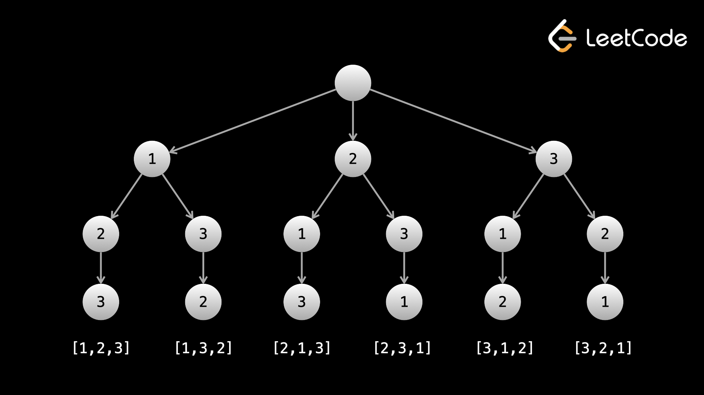

Одним из распространенных типов проблем, которые можно решить с помощью обратного отслеживания, являются проблемы, требующие создания чего-либо.
Example 1: 46. Permutations
Учитывая массив различных целых чисел, верните все возможные перестановки в любом порядке.
Например, если заданы nums = [1, 2, 3], верните [[1,2,3],[1,3,2],[2,1,3],[2,3,1],[3
,1,2],[3,2,1]].
Перестановка содержит все элементы nums без дубликатов. Давайте создадим каждую перестановку, используя рекурсивную функцию backtrack(curr), где curr — текущая создаваемая перестановка. Базовым случаем будет случай, когда curr.length == nums.length — мы завершили перестановку и не можем идти дальше. В базовом случае добавьте curr к ответу и вернитесь.
Чтобы построить все перестановки, нам нужны все элементы с первым индексом, а для каждого из этих элементов нам нужны все остальные элементы со вторым индексом и так далее. Следовательно, нам следует перебирать весь ввод при каждом вызове backtrack. Поскольку перестановка не может иметь дубликатов, мы должны проверить, есть ли число в curr, прежде чем добавлять его в curr. Каждый вызов backtrack подобен посещению узла в дереве возможностей.
Используя nums = [1, 2, 3], ответ «дерево» выглядит так:

Листья — это базовые случаи/ответы на проблему.
Во-первых, чтобы сгенерировать все перестановки, нам нужно поставить каждое число на первую позицию. Для каждого числа в первой позиции нам нужно перебрать все остальные числа во второй позиции и так далее.
Мы будем моделировать возврат с помощью дерева. Каждый узел в дереве представляет вызов функции. Для данного вызова функции аргумент curr представляет текущую перестановку, которую мы создаем.
Когда мы добавляем элемент в curr, мы делаем еще один вызов backtrack. Это равносильно переезду к ребенку. Корневой узел представляет собой пустой массив, а путь от корня до любого данного узла представляет собой curr.
Чтобы сгенерировать/обйти это дерево, мы начинаем с вызова backtrack с curr = []. Затем мы ставим первое число на первую позицию и снова вызываем backtrack. Во втором вызове мы не можем поместить первое число во вторую позицию, поскольку мы уже использовали первое число, поэтому вместо него мы помещаем второе число и снова вызываем backtrack.
В конце концов, curr будет иметь ту же длину, что и nums, что указывает на то, что мы использовали все числа (поскольку дублирование не допускается) и у нас есть допустимая перестановка. Это листовой узел/базовый случай — мы добавляем curr к ответу, а затем возвращаемся.
Каждый раз, когда мы возвращаемся, как и в DFS, мы возвращаемся вверх по дереву. Помните: путь от корня до данного узла представляет собой curr. Когда мы возвращаемся, мы удаляем последний узел на пути. Это означает, что нам также нужно удалить последний элемент из curr.
После того, как мы испробовали все возможности с первым числом в первой позиции, мы пробуем второе число в первой позиции и снова проходим по поддереву. В общем, при каждом вызове backtrack мы перебираем входные данные и, если обнаруживаем, что число отсутствует в curr, мы добавляем его в curr и просматриваем поддерево.
def backtrack(curr):
if len(curr) == len(nums):
ans.append(curr[:])
return
for num in nums:
if num not in curr:
curr.append(num)
backtrack(curr)
curr.pop()
ans = []
backtrack([])
return ans
При добавлении ответа нам нужно создать копию curr, поскольку curr — это всего лишь ссылка на адрес массива.
Временная сложность этого алгоритма очень низкая, но входные данные говорят, что 1 <= nums.length <=6, так что это ожидаемо. Пусть n=nums.length. Первоначальный вызов возврата («корень» дерева) выполняет n вызовов. Каждый из этих вызовов выполняет n — 1 вызовов (избегая дублирования), а каждый из них — n — 2 и так далее. Точная временная сложность алгоритма на самом деле довольно сложна, но мы можем использовать только что изложенную логику, чтобы оценить ее примерно О(n⋅n!). Существует дополнительный коэффициент n, потому что нам нужно скопировать каждую перестановку. Пространственная сложность O(n) для curr и стека вызовов рекурсии.
Пример 2: 78. Подмножества
Дан целочисленный массив уникальных элементов, верните все подмножества в любом порядке без дубликатов.
Например, если заданы nums = [1, 2, 3], верните [[],[1],[2],[1,2],[3],[1,3],[2,3],[
1,2,3]]
Этот пример аналогичен предыдущему. Есть два основных различия: - Длина: подмножество может иметь любую длину, тогда как перестановка имеет фиксированную длину n. - Порядок элементов: [1, 2, 3] и [3, 2, 1] — разные перестановки, но они представляют собой одно и то же подмножество.
Обратите внимание, что в примере решения каждый ответ сортируется - для каждого числа nums[i] после него отображаются только числа после индекса i. Чтобы избежать дублирования и при этом найти каждое подмножество, мы можем передать целое число i в нашу функцию backtrack, которая показывает, с чего нам следует начать итерацию. Когда мы перебираем входные данные, мы перебираем [i, n] вместо [0, n]. При вызовах backtrack мы можем передать индекс добавляемого числа плюс один, чтобы убедиться, что мы включаем числа только после добавляемого для остальной части поддерева.
Это очень распространенный метод предотвращения дублирования в проблемах с возвратом — использование целочисленного аргумента, который представляет собой отправную точку итерации при каждом вызове функции.
Мы можем использовать тот же процесс, что и в предыдущем подходе, для создания дерева возврата.
Первое, что важно понять, — это то, что представляет собой аргумент, который представляет i. В предыдущей задаче мы перебрали весь ввод в каждом узле. Мы не можем сделать это здесь, так как это приведет к созданию дублирующихся подмножеств. Например, если у нас есть nums = [1, 2, 3], то в какой-то момент у нас будет curr = [1, 2]. Когда мы закончим поддерево с 1 в первой позиции, мы попробуем 2 в следующей позиции. Если бы мы рассмотрели все числа в каждом узле, мы бы получили curr = [2, 1], что является дубликатом [1, 2], поскольку порядок здесь не имеет значения.
Таким образом, когда мы добавляем элемент в curr, мы хотим учитывать только те элементы, которые идут после этого элемента, для всего поддерева. Мы используем аргумент i, который сообщает нам, с чего начать итерацию на каждом узле. Если мы добавим элемент с индексом j, мы передаем j + 1 следующему вызову.
Теперь, когда мы поняли, что i делает, давайте поговорим о различиях в реализации этой задачи и предыдущей. В предыдущей задаче ответными узлами были листовые узлы (поскольку листовые узлы представляли curr, имеющий длину n). В этой задаче подмножество может иметь любую длину, поэтому каждый узел является ответом (даже корень, поскольку корень представляет собой пустое подмножество []). Поэтому первое, что мы сделаем на каждом узле — добавим curr к ответу.
Единственное другое отличие состоит в том, что мы будем перебирать входные данные, начиная с i, вместо того, чтобы перебирать весь ввод. Как упоминалось выше, это гарантирует, что в нашем ответе не будет дубликатов.
def backtrack(curr, i):
if i > len(nums):
return
ans.append(curr[:])
for j in range(i, len(nums)):
curr.append(nums[j])
backtrack(curr, j + 1)
curr.pop()
ans = []
backtrack([], 0)
return ans
На этот раз наш базовый случай — это когда i > nums.length — у нас закончились числа для использования. Модификация curr и отмена модификации остаются прежними.
Вы можете заметить, что базовый случай на самом деле никогда не выполняется, поскольку функцию нельзя вызвать с аргументом, превышающим длину входных данных. Мы включили условие для ясности.
Есть 2n подмножества, где n — длина входного массива — для каждого элемента мы можем либо брать его, либо не брать. Что касается временной сложности, вы можете думать об алгоритме как о DFS на дереве с 2n узлами. На каждом узле мы делаем копию curr, поэтому временная сложность равна О(n⋅2). Пространственная сложность O(n) для curr и стека вызовов рекурсии.
Пример 3: 77. Комбинации
Учитывая два целых числа n и k, верните все комбинации k чисел из
диапазона [1, n] в любом порядке.
Например, если n = 4, k = 2, верните
[[2,4],[3,4],[2,3],[1,2],[1,3],[1,4]].
При проверке проблема заключается в том, чтобы запросить все подмножества диапазона [1, n] длиной k. Мы можем использовать тот же алгоритм, что и выше, переключаясь, когда мы добавляем curr к ответу от каждого вызова, только на базовый случай. Мы могли бы создать массив с числами от 1 до n, но это была бы пустая трата места — мы можем просто использовать целое число итерации цикла for.
Обратите внимание, что для комбинаций дубликаты также не допускаются. Например, [1, 2] и [2, 1] — одно и то же. Мы можем использовать это наблюдение, чтобы сделать вывод, что нам нужно найти все подмножества длины k.
Таким образом, мы можем, по сути, скопировать и вставить наш код из предыдущей задачи и внести некоторые незначительные изменения. Во-первых, у нас есть новый базовый вариант curr.length = k. После этого нам не нужно продолжать добавлять числа в curr, потому что нас не интересуют комбинации большей длины. Как и в первом примере, листья представляют собой базовый вариант, а также являются нашими узлами ответов. Поэтому мы добавим curr к ответу только на листе, а не на каждом узле.
В двух предыдущих задачах мы перебирали массив и добавляли элементы из массива. В этой задаче мы имеем дело с числами в диапазоне [1, n]. Одним из вариантов решения этой проблемы было бы создать массив [1, 2, ..., n] и затем просто применить тот же алгоритм к этому массиву. Однако мы можем сэкономить немного места, просто используя переменную итерации цикла for.
Мы по-прежнему используем аргумент i. Первоначально i = 1 означает, что мы рассматриваем 1 и все числа после нее. Мы выполняем итерацию с переменной цикла for num от i до n. Для каждого num мы добавляем его в curr, а затем передаем num + 1 следующему вызову backtrack.
def backtrack(curr, i):
if len(curr) == k:
ans.append(curr[:])
return
for num in range(i, n + 1):
curr.append(num)
backtrack(curr, num + 1)
curr.pop()
ans = []
backtrack([], 1)
return ans
Временную сложность этого алгоритма очень сложно определить. Это O(k * n! / (n - k)! * k!). На собеседовании понятно, если вы не можете определить точную временную сложность, но стараться все равно следует.
Хорошая стратегия — найти верхнюю границу временной сложности. При первом вызове цикл for выполняется n раз. Следующий вызов может выполняться n - 1 раз, затем следующий n - 2 и т.д., что приводит к O(n!). Однако максимальная глубина равна k, что означает, что умножение факториала не уменьшается до 1, а уменьшается до n - k, поэтому нам нужно разделить наш факториал на (n - k)!.
Пространственная сложность O(k) для curr и стека вызовов рекурсии.
Как видите, идея и код каждой из этих задач очень похожи. Не забудьте смоделировать проблему в виде дерева, а затем выяснить, какие дочерние элементы должны быть у каждого узла. Прежде чем двигаться дальше, попробуйте решить эти предстоящие практические задачи самостоятельно.